@inponomarev
Ivan Ponomarev, Synthesized.io/MIPT
Any code is a method of some class
Any data is stored in fields of some class
Any data type (except primitives, but including arrays) are inherited from the Object class
edu.phystech.foo
edu.phystech.foo.bar
Each .java file starts with a package declaration:
package edu.phystech.hello;
In the package directory can be package-info.java, containing no classes, but only JavaDoc above the package keyword.
<Package Name>.<classname> specifies the full identifier of any class available in your source code or from libraries (for example, edu.phystech.hello.App)
Nested packages are different packages in Java (package-private classes of one package will not be visible in another)
class ClassName
{
field1
field2
. . .
constructor1
constructor2
. . .
method1
method2
. . .
}package org.megacompany.staff;
class Employee {
// instance fields
private String name;
private double salary;
private LocalDate hireDay;
// constructor
public Employee(String n, double s, int year, int month, int day) {
name = n;
salary = s;
hireDay = LocalDate.of(year, month, day);
}
// a method
public String getName() {
return name;
}
// more methods
. . .
}//If necessary, we can import a class from another package
import org.megacompany.staff.Employee;
//somewhere in the body of the method
. . .
Employee hacker = new Employee("Harry Hacker", 50000, 1989, 10, 1);
Employee tester = new Employee("Tommy Tester", 40000, 1990, 3, 15);
hacker.getName(); //returns "Harry Hacker"Unlike local variables, fields can miss explicit initialization.
In this case, primitive types are set to a default value (0, false), and fields with references are set to null.
It is not forbidden to initialize the field at the place of its definition:
int a = 42 or even int a = getValue().
this field{ ...
int value;
setValue(int value) {
// the field is hidden by an argument
this.value = value;
}
registerMe(Registrator r) {
// a link to oneself is needed
r.register(this);
}
}public class Employee {
int age = 18;
public static void main(String[] args) {
Employee e = new Employee();
int a = 1;
foo(e, a);
System.out.printf("%d - %d", e.age, a);
//prints 42 - 1
}
static void foo(Employee e, int a) {
//e passed by reference, a passed by value
e.age = 42;
a = 5;
}
}new Employee("Bob")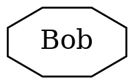
Employee hacker = new Employee("Bob");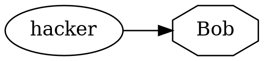
Employee junior = hacker;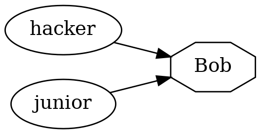
hacker = null;
junior = new Employee("Charlie");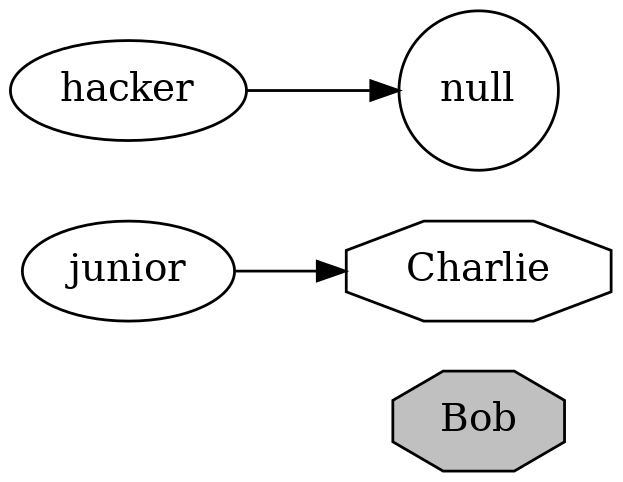
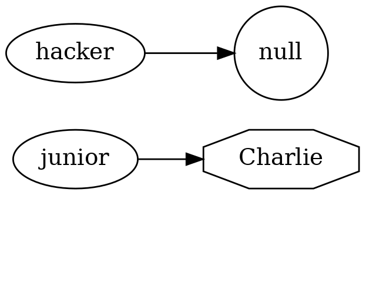
Scope | Visibility |
| class only |
package-private | package only (default) |
| class, package, and descendant classes |
| everywhere |
In a .java file, there can be only one public class, named the same as the .java file ('public class Foo' in the 'Foo.java' file).
There can be as many package-private classes as you like, but this is rather a bad practice.
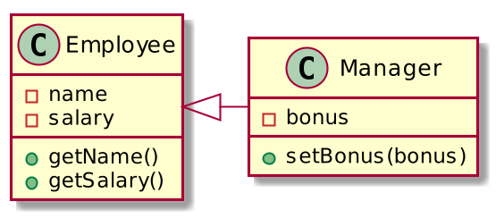
public class Manager extends Employee {
private double bonus;
. . .
public void setBonus(double bonus) {
this.bonus = bonus;
}
}// construct a Manager object
Manager boss = new Manager("Carl Cracker", 80000, 1987, 12, 15);
boss.setBonus(5000);
Employee[] staff = new Employee[3];
staff[0] = boss;
staff[1] = new Employee("Harry Hacker", 50000, 1989, 10, 1);
staff[2] = new Employee("Tommy Tester", 40000, 1990, 3, 15);
for (Employee e : staff)
System.out.println("name=" + e.getName() + ",salary=" + e.getSalary());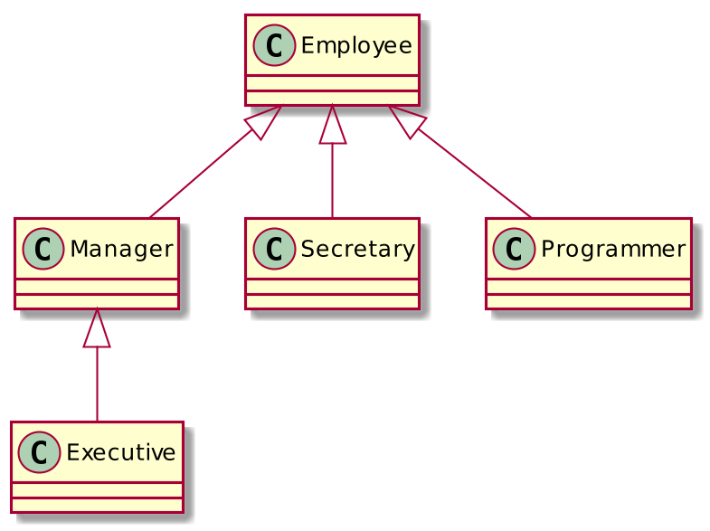
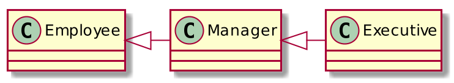
Executive ex = new Executive (...);
// members declared in Manager, Employee, and Executive are available for ex
Manager m = ex;
// members declared in Employee and Manager are available for m
Employee e = m;
// members declared in Employee only are available for mclass Employee {
private int salary;
public int getSalary() {
return salary;
}
public int getTotalPayout(){
return getSalary();
}
}
class Manager extends Employee {
private int bonus;
@Override //this is not mandatory, but highly desirable thing
public int getTotalPayout() {
return getSalary() + bonus;
}
}superclass Manager extends Employee {
private int bonus;
@Override
public int getTotalPayout() {
return super.getTotalPayout() + bonus;
}
}Unlike this, super does not point to any object (and cannot be passed as an argument). It just tells the compiler to call the superclass method.
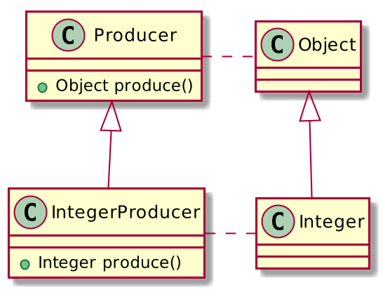
The return type can be of the same type or subtype
Argument types must match
final classes and methodsfinal keyword:
at the class level prohibits class inheritance
at the method level prohibit method inheritance
Why?
"Template method pattern"
J. Bloch: 'Design and document for inheritance, or else prohibit it'
sealed types (Java 15+)A sealed class be subclassed, but only by those who explicitly allowed to:
public sealed class Pet
permits
//no others may inherit from Pet
Cat, Dog, Fish {
}
public final Cat {...}
public sealed Dog permits Hound, Terrier, Toy {...}
public non-sealed Fish {...}sealed interfaces and `record`sWe don’t know what interface or record is yet, but just remember:
public sealed interface Expr
permits Add, Subtract, Multiply, Divide, Literal {}
//implicitly final!
public record Add(Expr left, Expr right) implements Expr {}
public record Subtract(Expr left, Expr right) implements Expr {}
public record Multiply(Expr left, Expr right) implements Expr {}
public record Divide(Expr left, Expr right) implements Expr {}
public record Literal(int value) implements Expr {}Method signature is defined by its name and argument types:
//org.junit.jupiter.api.Assertions
void assertEquals(short expected, short actual)
void assertEquals(short expected, short actual, String message)
void assertEquals(short expected, short actual, Supplier<String> messageSupplier)
void assertEquals(byte expected, byte actual)
void assertEquals(byte expected, byte actual, String message)
void assertEquals(byte expected, byte actual, Supplier<String> messageSupplier)
void assertEquals(int expected, int actual)
void assertEquals(int expected, int actual, String message)
void assertEquals(int expected, int actual, Supplier<String> messageSupplier)
. . .Data common to all instances of the class:
class Employee {
/*WARNING: This example
does not work in multi-threaded environment*/
private static int nextId = 1;
private int id;
. . .
public void setId() {
id = nextId;
nextId++;
}
}Allocate memory once
public class Math {
. . .
public static final double PI = 3.14159265358979323846;
. . .
}
. . .
Math.PI // returns 3.14...Only static variables and other static methods are available to static methods
class Employee {
private static int nextId = 1;
private int id;
. . .
public static int getNextId() {
return nextId; // returns static field
}
}
. . .
Employee.nextId() //class name instead of objectNow we understand: the main method is available everywhere and does not require instantiation of the object:
public class App {
public static void main(String... args) {
System.out.println("Hello, world!");
}
}public class Person {
//public constructor without arguments
public Person() {
....
}
//package-private constructor with argument
Person(String name) {
....
}
}The constructor must exist.
If we don’t 1) explicitly write a constructor, 2) the parent class has a constructor without arguments — then implicitly the class will have a public constructor with no default arguments.
If we explicitly wrote at least one constructor, the default constructor disappears.
If the parent class does not have a constructor without arguments, the default constructor is not created.
Constructor does not have to be public.
If the superclass does not have a constructor without arguments, the first call should be 'super(…) `.
public class Person {
Person(String name){
...
}
}
class Employee extends Person{
Employee(String name) {
super(name);
...
}
}'this(…) ` call
public class Person {
Person(String name){
...
}
Person(){
this("unknown");
}
}class Employee {
private static int nextId;
private int id;
// static initialization block
static {
nextId = ThreadLocalRandom.current().nextInt(10000);
}
// object initialization block
{
id = nextId;
nextId++;
}
}There are no destructors!
Don’t even try to use 'finalize'
Why the finalize method was a bad idea?
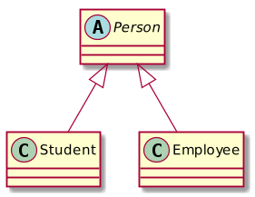
public abstract class Person
{
public Person(String name) {
this.name = name;
}
public String getName() {
return name;
}
public abstract String getDescription();
}public class Student extends Person
{
private String major;
public Student(String name, String major) {
super(name);
this.major = major;
}
@Override
public String getDescription() {
return "a student majoring in " + major;
}
}A class in which at least one of the methods is not implemented must be marked as abstract
Unimplemented methods in a class occur in two ways:
explicitly declared as abstract
Inherited from abstract classes or interfaces and not overridden.
Abstract classes cannot be instantiated through new operator.
new Person('John Doe'); — compilation error: 'Person is abstract, cannot be instantiated'.
// it can't be instantiated!
public interface Prism
{
// it's a constant!
double PI = 3.14;
//these are public abstract methods!
double getArea();
double getHeight();
//this method can call other methods and read constants
default double getVolume() {
return getArea() * getHeight();
}
}public class Parallelepiped implements Prism {
private double a;
private double b;
private double h;
@Override
public double getArea() {
return a * b;
}
@Override
public double getHeight() {
return h;
}
}If any of the interface methods are not overridden, the class should be marked as abstract.
No internal state and constructors
You can inherit (via extends) from only one class, but implement (via implements) as many interfaces as you want — multiple inheritance.
Therefore, as an abstraction, the interface is preferred.
instanceof operator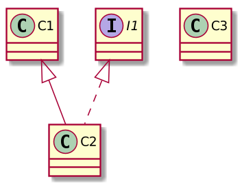
C1 c1; C2 c2; C3 c3; I1 i1;
x instanceof A // false if x == null
c1 instanceof C2 // true or false
i1 instanceof C2 // true or false
c2 instanceof C1 // always returns true
c3 instanceof C2 // won't compilePerson p = . . .;
if (p instanceof Student) {
//if you do not protect with instanceof, ClassCastException is possible
Student s = (Student) p;
. . .
}Person p = . . .;
if (p instanceof Student s) {
//the Student s variable is visible here
. . .
} else {
//the Student s variable is NOT visible here
}
//Will compile
if (obj instanceof String s && s.length() > 5) {
. . .
s.contains(..)
}
//Won't compile
if (obj instanceof String s || s.length() > 5) {...}//Before Java 10
if (obj instanceof Number) {
Number n = (Number) obj;
System.out.println(n.longValue());
}
//Java 10+
if (obj instanceof Number) {
var n = (Number) obj;
System.out.println(n.longValue());
}
//Java 14+
if (obj instanceof Number n) {
System.out.println(n.longValue());
}public int calculate(Expr expr) {
return switch (expr) {
//Won't comile if we forgot some of the Expr implementations!
case Literal l -> l.value();
case Divide d -> calculate(d.left()) / calculate(d.right());
case Multiply m -> calculate(m.left()) * calculate(m.right());
case Add a -> calculate(a.left()) + calculate(a.right());
case Subtract s -> calculate(s.left()) - calculate(s.right());
};
}class Outer {
int field = 42;
class Inner {
public void show() {
//there is an access to the external class's state!
System.out.println(field);
//prints 42
}
}
void initInner(){
// initialization of the nested class inside the outer class
new Inner();
}
}
//initialization of a nested outside the outer class
Outer.Inner in = new Outer().new Inner();Each instance of Inner has an implicit reference to Outer.
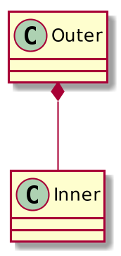
class Outer {
int field = 42;
class Inner {
//nested class field hides external class field
int field = 18;
public void show() {
System.out.println(field);
//prints 18
}
}
}class Outer {
int field = 42;
class Inner {
//nested class field hides external class field
int field = 18;
public void show() {
System.out.println(Outer.this.field);
//prints 42!
}
}
}class Outer {
void outerMethod() {
//final (or effectively final) here matters!
final int x = 98;
System.out.println("inside outerMethod");
class Inner {
void innerMethod() {
System.out.println("x = " + x);
}
}
Inner y = new Inner();
y.innerMethod();
}
}class Outer {
void outerMethod() {
//they do not capture the external state
record Foo (int a, int b) {};
enum Bar {A, B};
interface Baz {};
//NB:
//static not allowed here!
static class X {};
}
}In fact, they are no different from just classes:
class Outer {
private static void outerMethod() {
System.out.println("inside outerMethod");
}
static class Inner {
public static void main(String[] args) {
System.out.println("inside inner class Method");
outerMethod();
}
}
}
. . .
Outer.Inner x = new Outer.Inner();
//unlike non-static new Outer().new Inner();class Demo {
void show() {
System.out.println("superclass");
}
}
class Flavor1Demo {
public static void main(String[] args){
Demo d = new Demo() {
void show() {
super.show();
System.out.println("subclass");
}
};
d.show();
}
}Most often - as an implementation of abstract classes and interfaces "in place"
An anonymous class is a nested class, so before the introduction of lambdas and method references, this was the only way to organize a callback
. . .
button.onMouseClick(new EventListener(){
void onClick(Event e) {
//here we have access to all external fields
//and effectively final-variables
}
});Any class in Java is a descendant of 'Object'
You don’t need to write class Employee extends Object
Important methods are defined in this class
equals and hashCode
toString
equals() and hashCode()boolean equals(Object other) returns true iff the internal states coincide
int hashCode() returns an integer value that must match for objects with the same internal state
This is needed for hash tables (and probably is a leaky abstraction)
equals formal contractReflexivity:
\(\forall x \ne \mathrm{null} (x.equals(x))\)
Symmetry:
\(\forall x \ne \mathrm{null} \, \forall y \ne \mathrm{null} (x.equals(y) \iff y.equals(x))\)
Transitivity:
\(\forall x \ne \mathrm{null} \, \forall y \ne \mathrm{null} \, \forall z \ne \mathrm{null} (x.equals(y) \& y.equals(z) \Rightarrow x.equals(z))\)
Consistency: if compared objects didn’t change, each equals invocation must return the same value.
\(\forall x \ne \mathrm{null} (x.equals(\mathrm{null}) = \mathrm{false})\)
hashCode formal contractConsistency: if compared objects didn’t change, each hashCode() invocation must return the same value (but not necessary the same between different runs of the application)
Relation to equals:
\(\forall x \forall y (x.equals(y) \Rightarrow x.hashCode() = y.hashCode())\)
While+
\(x.hashCode() = y.hashCode() \Rightarrow x.equals(y)\)
is not obligatory, but it’s desirable for most of the cases.
equals and hashCode should be overridden together and consistently to fulfil the contract \(x.equals(y) \Rightarrow x.hashCode() = y.hashCode()\)
It is difficult to properly implement equals and hashCode, but, fortunately, you do not need to do it yourself.
For testing there is a special library EqualsVerifier.
To generate equals and hashCode you can either use the capabilities of the IDE or Lombok library.
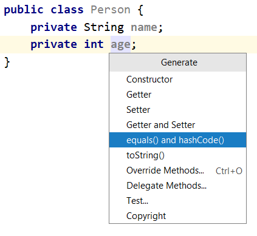
public class Person {
private String name;
private int age;
@Override
public boolean equals(Object o) {
// NEVER EVER write this yourself!
if (this == o) return true;
if (o == null || getClass() != o.getClass()) return false;
Person person = (Person) o;
return age == person.age &&
Objects.equals(name, person.name);
}
@Override
public int hashCode() {
return Objects.hash(name, age);
}
}import lombok.EqualsAndHashCode;
@EqualsAndHashCode
public class Person {
private int age;
private String name;
}toStringpublic class Person {
private String name;
private int age;
. . .
@Override
public String toString() {
return "Person{" +
"name='" + name + '\'' +
", age=" + age +
'}';
}
}
. . .
Person person = . . .
System.out.println(person);import lombok.ToString;
@ToString
public class Person {
private int age;
private String name;
}public class Point {
private final int x;
private final int y;
/*Oh wait! We need:
* constructor
* getX() and getY()
* equals and hashCode
* toString
* 40 lines of code for nothing!
*/
public double distance(Point other) {
...
}
}import lombok.Data;
@Data
public class Point {
private final int x;
private final int y;
public double distance(Point other) {
...
}
}record Point(int x, int y) {
public double distance(Point other) {
...
}
}private final fields
constructor
access using x() and y()
equals, hashCode and toString
one can’t inherit a record from a class or a record, but can implement interfaces